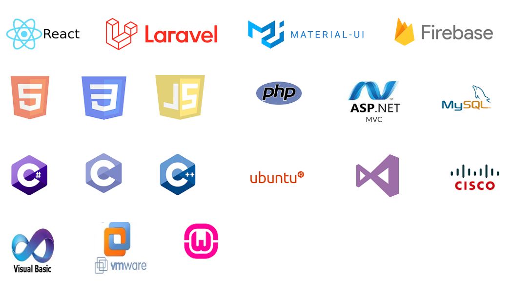

Hello, I am Abir Kabalan
I am a Full Stack Web Developer who is constantly aiming to learn new technologies.
"I believe that the price of success is hard work, perseverance, learning, and most of all, love of what you are doing or learning to do."
How It Started?
So you're here to learn more about me. Excellent! I love talking about myself 😝.
How did I get into tech? Well, I first discovered my passion for coding in my second year of University. I was majoring in Pure Mathematics, and had a C programming course. At the time, I had no idea about coding, but it was the only course I was excited about learning.
Without any second thoughts, I decided to change my major into Computer Science and since then, this amazing journey started.
I love learning new things. Naturally, tech was the perfect place to be. It’s always changing and always moving forward.
Some people might find this overwhelming but I love it. You’ll never run out of things to learn.
Feel free to check my learning journey.
Skills
Throughout the years, I developed numerous skills and strengthened existing abilities, all which would serve me well in the development field.
Interests & Hobbies
Wondering about how I spend my spare time? I do different things, depending on how I'm feeling.
I either spend it reading, I like reading comics and manga's.
Or drawing, I love drawing. It started years ago with cartoon's drawings and then developed to drawing portraits and painting. I also lately started digital drawing and I like to improve more my skills.
I also bake and always watch videos to learn some new recipes.
Or I spend it going through my social media accounts.